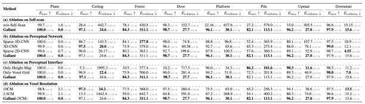
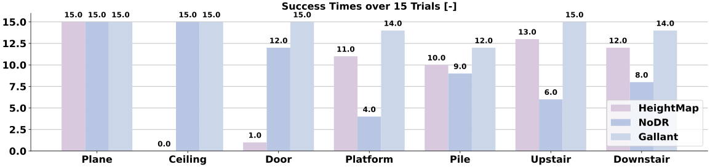

Gallant a voxel-grid-based framework for humanoid locomotion and local-navigation in 3D constrained terrains.
Door and Ceiling Traversing: The robot conducts local-navigation to avoid lateral obstacles, and ducks to cross overheading obstacles.
Platform Stepping and Gap Traversing: The robot steps on 30cm platform, traverses 30cm/35cm/40cm gap, and steps down the platform from left to right.
Stair Ascending and Descending: The robot ascends and descend stairs. (left side: 15cm; right side: 20cm)

Figure 1: Method Overview. (a) Curriculum-based training over 8 representative terrains enhances generalization. (b) Realistic voxel path alignment achieved via efficient LiDAR simulation with domain-randomized latency and noise. (c) A 2D CNN-based perceptual module processes voxel grid using the z-dimension as input channels, balancing efficiency and representation capability. (d) A latent-aware PPO policy enables zero-shot sim-to-real transfer across diverse obstacles, including ground, lateral, and overhead challenges.

Figure 2: Policy training pipeline in simulation, progressing from MoCap pre-training to environment-aware tracking and distillation.

Figure 3: Policy training pipeline in simulation, progressing from MoCap pre-training to environment-aware tracking and distillation.
We thank Huayi Wang and Moji Shi for their guidance with the deployment of elevation map. We are grateful to Junli Ren, Tao Huang, Zirui Wang, Weishuai Zeng, Weixiang Zhong, Xiaojie Niu, Shunlin Lu for helpful advice and discussions during the paper. We thank Shi Zhang, Shenghan Zhang, Quanli Xuan, Haihua Zhu, Wei Shi for their help in transforming robot's structure and building real-world terrains.
@article{ben2025gallant,
title = {Gallant: Voxel Grid-based Humanoid Locomotion and Local-navigation across 3D Constrained Terrains},
author = {Qingwei Ben, Botian Xu, Kailin Li, Feiyu Jia, Wentao Zhang, Jingping Wang, Jingbo Wang, Dahua Lin, Jiangmiao Pang},
journal = {arXiv preprint arXiv:2511.},
year = {2025}
}